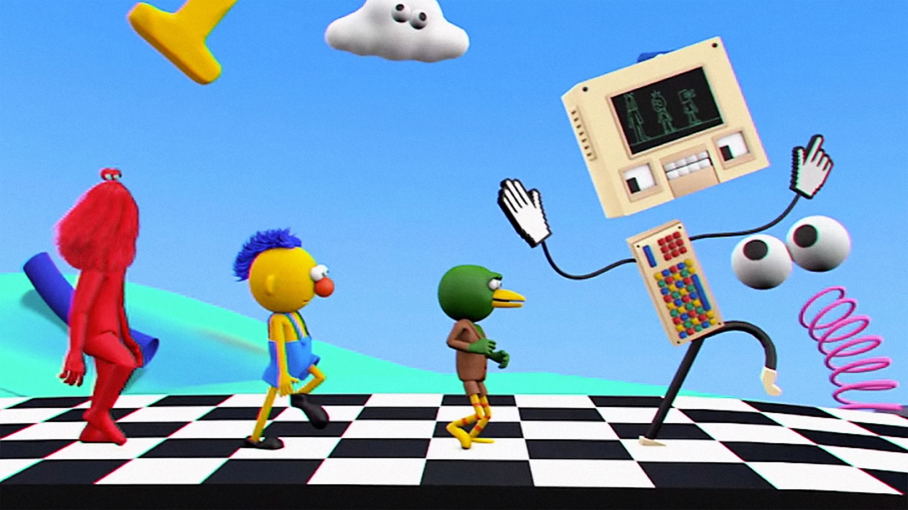
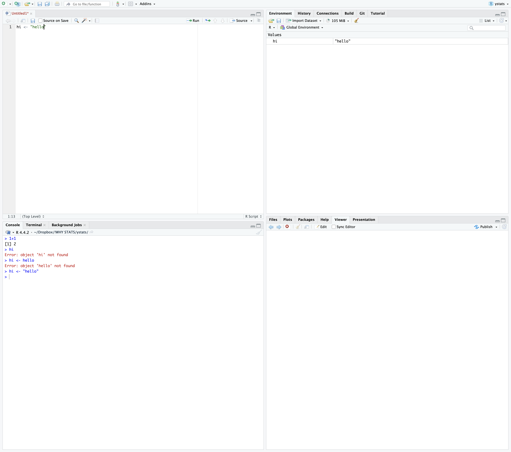
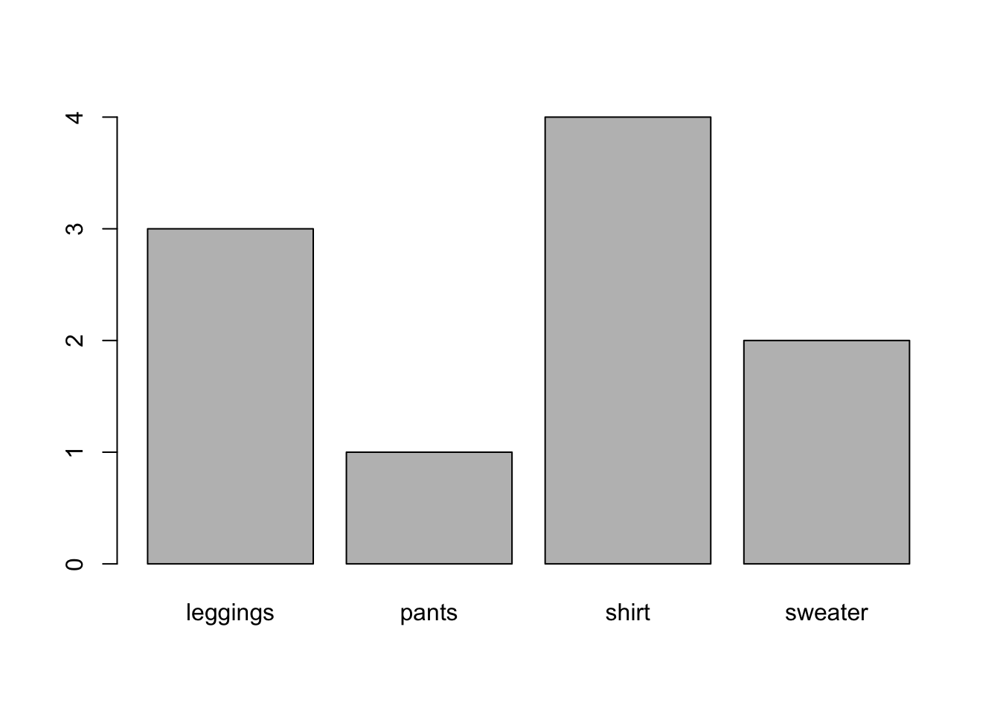
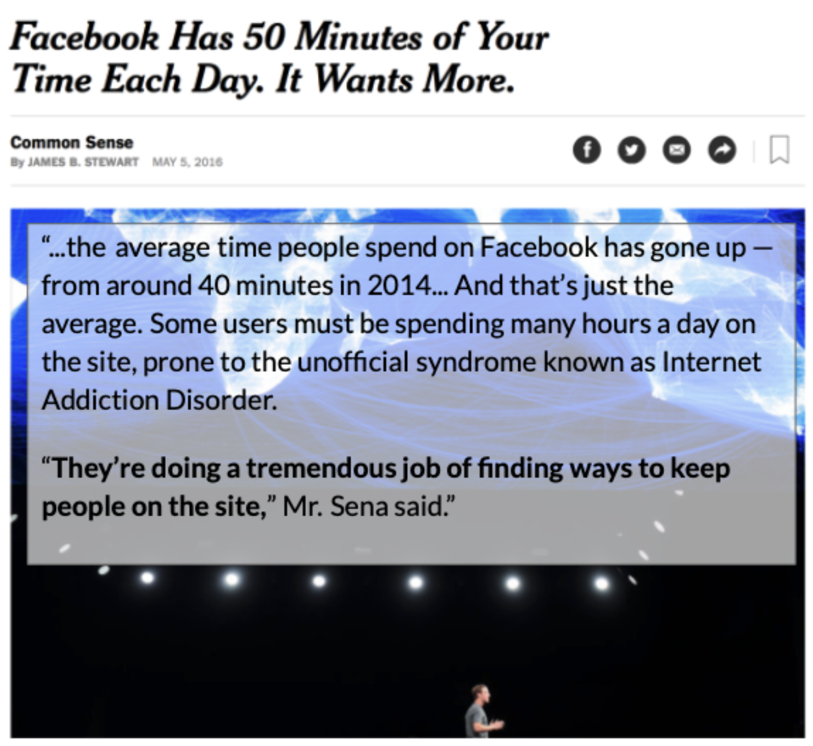
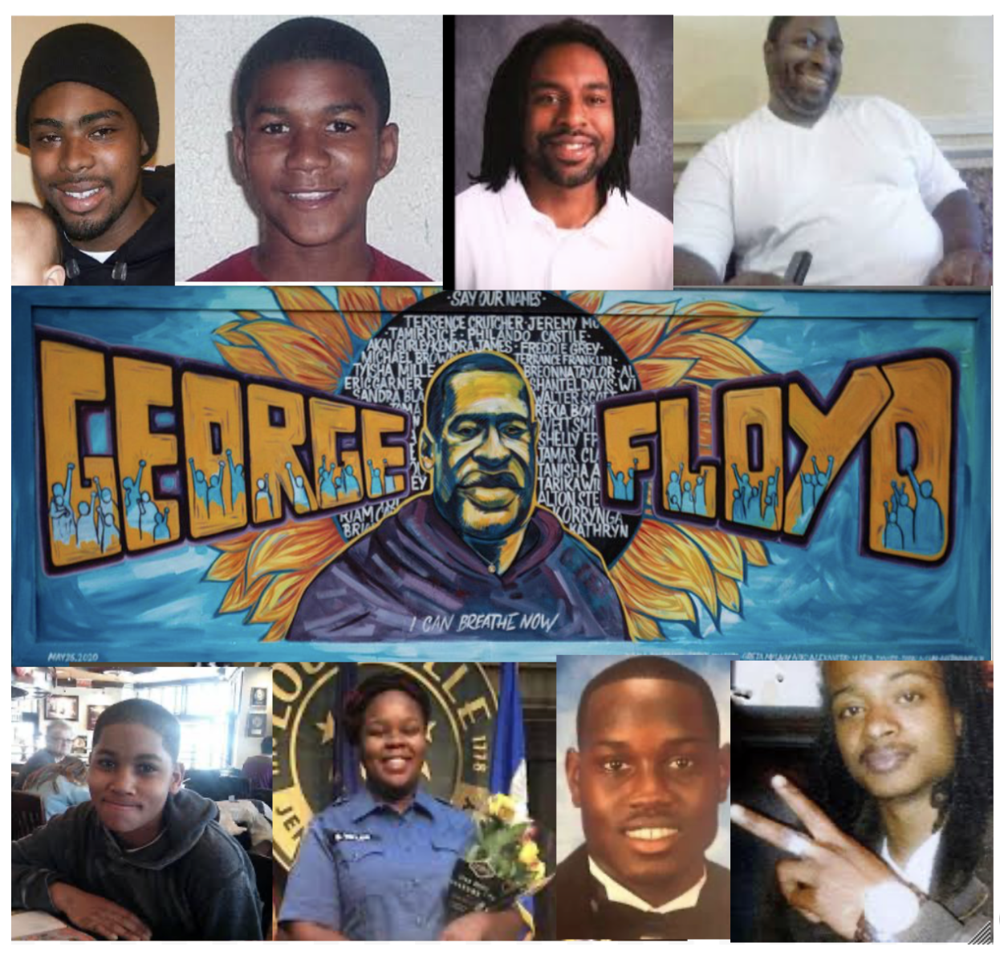
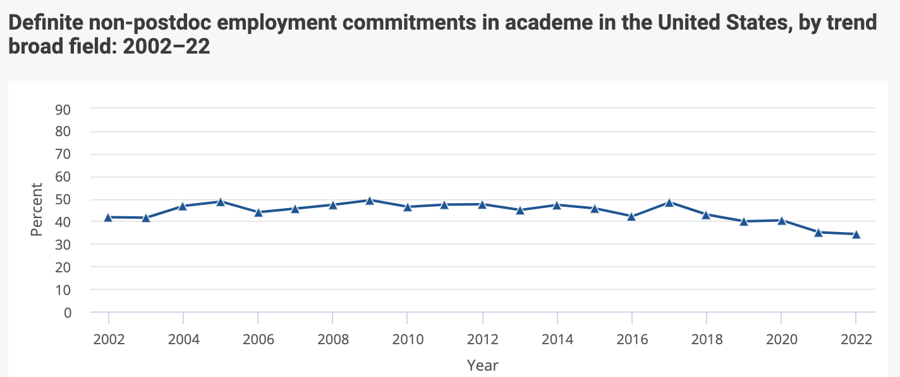
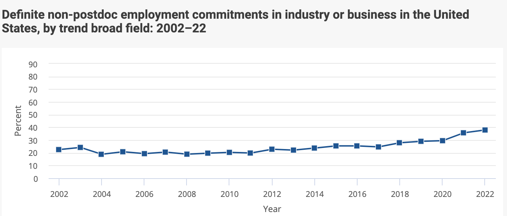

counting <- c(1,2,3,4,5) # the numbers one through five
print(counting) # one way to "print" the variable[1] 1 2 3 4 5counting # another way to "print" the variable[1] 1 2 3 4 5hist(counting) # a way to graph the variable (a histogram)
access these lecture notes on bCourses (or visit : catterson.github.io/ystats/1L_WhyStats.html
click on this link to check-in (or visit : tinyurl.com/first101class)

Class Activity. Let’s create a list of variables that we observe in this classroom.
Key Terms. From the readings.
Affect, Behavior, Cognition
Between vs. Within-Person Variation
[7 Minutes] Answer the following questions with your buddy.
Find a buddy in the class! (There’s a discord thread if you prefer to communicate with someone online.)
If you could have dinner with anyone in the world (living or dead) who would it be?
Why are you a psychology major? What interests you about people (or non-human animals)?
How would you label this interest as a variable?
Are you interested in the between-person or within-person version of this variable?
Are you interested in the Affective, Behavioral, or Cognitive aspect of this variable?
Student Examples
The console is where R does its work.
In this class, we’ll be using RStudio. RStudio is an IDE (Integrated Development Environment) that includes the console along with other useful windows and tools.

| Code | Description |
|---|---|
|
variable = an object that you will define in R <- = “assign”; tells R to save whatever comes on the right to whatever object is on the left. c = combine : tells R to combine whatever happens in the parentheses () = parentheses to group related terms # = what you store in the variable; each item should be separated by a comma and space. |
|
For continuous variables : draws a histogram. |
counting <- c(1,2,3,4,5) # the numbers one through five
print(counting) # one way to "print" the variable[1] 1 2 3 4 5counting # another way to "print" the variable[1] 1 2 3 4 5hist(counting) # a way to graph the variable (a histogram)
|
variable = an object that you will define in R <- = “assign”; tells R to save whatever comes on the right to whatever object is on the left. c = combine : tells R to combine whatever happens in the parentheses () = parentheses to group related terms # = what you store in the variable; each item should be separated by a comma and space. |
|
as.factor() # converts a string variable into a categorical factor |
|
# “saves” this conversion as the original variable |
|
For categorical variables : draws a barplot. For continuous variables : illustrates values of the variable (y-axis) as a function of their index (x-axis). |
The data below describe the categories of family laundry that was hanging in my apartment to dry.
laundryhang <- c("shirt", "shirt", "leggings", "leggings", "shirt",
"shirt", "leggings", "pants", "sweater", "sweater") # defining a string variable
print(laundryhang) [1] "shirt" "shirt" "leggings" "leggings" "shirt" "shirt"
[7] "leggings" "pants" "sweater" "sweater" laundryhang # another way to "print" the variable [1] "shirt" "shirt" "leggings" "leggings" "shirt" "shirt"
[7] "leggings" "pants" "sweater" "sweater" laundryhang <- as.factor(laundryhang) # changing the format of the sting variable into a categorical factor
plot(laundryhang) # a way to graph the non-numeric variable

Psychological scientists seek to better understand variation, in order to help make valid predictions in ways that help exert power over our environments.
| Topic | Other Questions We Might Ask? |
|---|---|
| 1 | |
| 2 |
Statistical Model : DV ~ IV1 + IV2 + … + IVk + error
DV = dependent variable = the variable you want to predict
IV = independent variable(s) = the variable(s) you think will predict the DV
k = any number = there can be MANY IVs
any variable can be an IV or DV - it’s up to the researcher to choose
~ = a squiggly line / tilde = our model is uncertain (not equal)
error = other factors that are not part of your model that would also explain the DV
We say: “the DV is a function of…”; “the DV depends on the IV(s)”
rain ~
class quality ~
KEY IDEA : Linear Models Help Make and Quantify Prediction

During our break, think a little bit about what research questions you might want to address for the project in this class. Below are some ideas to help you get started thinking of a research question if you are feeling stuck!
Question 3 (In Lecture / On Your Own). Get started on the final project by thinking through a research question you might be interested in studying as a psychology researcher. (Totally fine to change this, but great to start focusing on a question.)
RA = Research Assistant
Mostly Unpaid Experiences
Some paid experiences exist!
From the berkeley website…
Stanford [maybe paid]
“Cold calling” labs who are doing work you think is cool.
Chat with your TAs / Professors
As an RA :
work with data : transcribing data; behavioral coding data; recruiting and participants to collect data; setting up psychophysiological recordings; cleaning data; etc.
other opportunities to gain skills you can demonstrate :
reading & discussing papers
working with IRB (institutional review board - an ethics thing)
analyzing data → presenting research at a conference (poster) or submitting a paper for publication [your golden ticket]
general mentorship (how to apply to grad school; where to apply; who to talk to & e-mail; etc.)
NOTE : this work and these skills apply to other work outside of research applications [time management; coordinating schedules; juggling responsibilities; etc.]
get a sense of whether this [work or lab] is for you?
do you enjoy the work? are you going to look forward to showing up and doing the work / fulfilling the commitment?
are you working with a horrible monster?
not responsive
inconsistent work / no plan for your work
kind of a bully (emotionally abusive → stealing your work)
or are you working with someone who is super cool and a positive influence on mentoring young minds!?!?! [YES!!!!]
You are applying to work on research with a specific professor(s) at a school.
Should have a sense of the topic you want to pursue.
Good to have a narrative about how your past work and studies have prepared you for this topic / demonstrate an enduring interest in the topic.
Independent Thesis / Research Project :
an official honors’ thesis
undergraduate research project (e.g., SURF; Psych 101!)
your own independent study / advanced work you did as an RA
Personal Statement : Experiences with Research You Can Write About
I’m fascinated by people…Over the last year, I worked on an independent research study to better understand….
Working as an RA; your research project; attending / presenting at a conference; etc.
3-4 Letters of Recommendation : folks who can speak personally to your ability to do research.
Clinical Students : some kind of clinical internship / experience 😟
Talk to people who are doing the thing you want to be doing about their journey
Some Data [Source]
| PhDs get jobs? |  |
| but not in academia… |  |
| $$$$$$$$ |  |
Here’s a link to the article where this headline comes from. These data are a little dated, and I couldn’t immediately find more recent data - my guess is Meta does not really want to advertise that people are using the product more and more. However, in reports to investors reports consistent growth in metrics like “ad impressions” and “daily active users”. Let me know if you find other sources to show how technology companies are capturing more and more of our attention!↩︎
Oscar Grant, Trayvon Martin, Philando Castile, Eric Garner, George Floyd, Tamir Rice, Breonna Taylor, Ahmaud Aubrey, Jacob Blake. Here’s a more comprehensive list, and here’s a summary article on policing and race.
↩︎